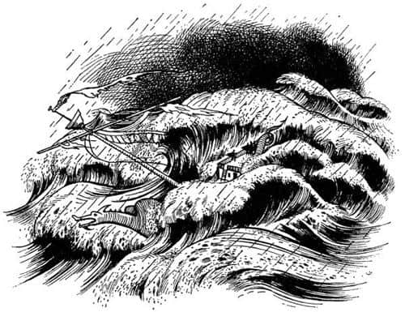
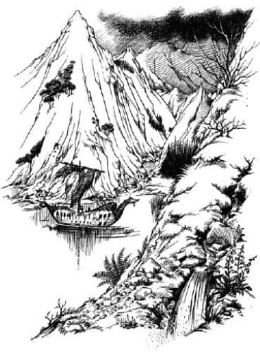
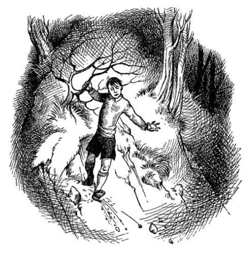

Fırtına ve Sonuçları
Karaya çıkmalarından yaklaşık üç hafta sonra Şafak Yıldızı Dar Liman’dan suya indirildi. Çok görkemli bir veda olacağı söylentileri yayılmıştı ve geminin gidişini görmek için büyük bir kalabalık toplanmıştı. Caspian, Issız Adalar’da yaşayanlara son konuşmasını yapıp Dük ve ailesiyle vedalaşırken tezahürat da gözyaşı da vardı. Gemi mor yelkenleri tembelce dalgalanarak kıyıdan uzaklaşırken Caspian’ın, geminin kıçında çalınan borusunun sesi de gittikçe zayıfladı ve herkes sessizleşti. Sonra gemi rüzgârla buluştu. Halatlar çözülüp, yelken basıldı. Rota tutmak için küreklere asılındı. Şafak Yıldızı, pruvasının altından geçen ilk dalgayla tekrar yaşayan bir gemi haline geldi. Görevli olmayanlar aşağı indi, kıçtaki ilk nöbetçi Drinian’dı. Gemi Avra’nın güneyini dönüp başını doğuya doğru çevirdi.
Sonraki birkaç gün harikaydı. Lucy, her sabah uyandığında suda yansıyan günışığının, kamarasının tavanında dans edişini görüyordu. Etrafına bakıp da Issız Adalar’dan aldığı yeni ve güzel şeyleri gördükçe – deniz çizmeleri, sandaletler, pelerinler, deri yelekler ve eşarplar – dünyadaki en şanslı kız olduğunu düşünüyordu. Sonra güverteye çıkıp her sabah daha da berrak bir mavilikte görünen denize bakıyor ve günden güne ısınan havayı içine çekiyordu. Ardından sıra kahvaltıya geliyor ve insanın sadece denizdeyken hissedebileceği bir iştahla yemeğini yiyordu.
Lucy, kıçtaki küçük sırada oturup Bastıbacak’la satranç oynayarak epeyce zaman geçiriyordu. Onun, bir hamle yapması gerektiğinde, satranç tahtasının ortasında ayak parmaklarının ucunda dikilişini ve kendisi için çok büyük olan taşları iki pençesiyle kaldırışını görmek çok eğlenceliydi. Çok iyi bir oyuncuydu ve hamlelerini hesapladığı zaman genellikle kazanıyordu. Fare bazen, atı, vezir ve kalenin önüne yenilecek şekilde sürmek gibi epeyce gülünç şeyler yaptığı için arada bir Lucy de kazanıyordu. Bastıbacak bunun bir satranç oyunu olduğunu unuttuğunda yeniliyordu ancak, çünkü o gerçek bir savaşı düşünüyor ve ata gerçek savaşta yapacaklarını yaptırmaya çalışıyordu. Çünkü zihni, boş umutlar, ölüm kalım mücadeleleri ve direniş öyküleriyle kaynıyordu.
Bu güzel günler fazla uzun sürmedi. Bir akşam Lucy geminin ardında bıraktığı saban izine benzer dümen suyunu boş boş seyrederken batıda inanılmaz bir hızla toplanan büyük bir bulut kümesi gördü. Sonra küme yarıldı ve aralıktan sapsarı gün ışıkları saçıldı. Arkalarındaki bütün dalgalar alışılmadık şekillere büründü ve deniz kirli bir yelken bezi gibi sarımsı bir renk aldı. Hava soğudu. Gemi sanki arkasındaki tehlikeyi fark etmiş gibi huzursuzca yol almaya başladı. Yelkenler bir an dümdüz ve serbest duruyor, ama hemen sonra çılgıncasına rüzgârla doluyordu. Lucy bütün bunları fark edip rüzgârın sesinin neden böylesine değiştiğini merak ederken Drinian, “Herkes güverteye” diye bağırdı. Bir anda herkes çılgınlar gibi çalışmaya başladı. Ambar kapaklarına çıtalar çakıldı, mutfaktaki ateş söndürüldü, adamlar yelkenleri küçültmek üzere yukarıya tırmandı. Daha işlerini bitirmeden fırtına patladı. Sanki geminin pruvasının önünde denizde büyük bir vadi açılmış ve mümkün olduğuna inanamayacağı derinliklere doğru hızla iniyorlarmış gibi gelmişti Lucy’ye. Geminin direklerinden çok daha yüksek, büyük ve gri bir su dağı karşıladı onları. Bir an için öleceklerini zannettiler, ama sonra bu su dağını aşmayı başardılar. Gemi kendi etrafında dönüyordu. Sular güverteye bir şelale gibi döküldü ve geminin kıçıyla baş kasarası, aralarında vahşi bir deniz olan iki adaymış gibi göründü. Yukarıdaki tayfalar serene sımsıkı sarılmış, umutsuzca yelkenlere hâkim olmaya çalışıyordu. Kopmuş bir halat yatay bir biçimde, adeta bir mızrak gibi dümdüz ve kaskatı duruyordu.

“Madam, aşağıya inin” diye bağırdı Drinian. Lucy denizci olmayan adamların – ve kadınların – tayfa için ayak bağı olduğunu bildiğinden ona itaat etmeye çalıştı. Ancak bu kolay değildi. Şafak Yıldızı korkunç bir şekilde sancak tarafına yatmıştı ve güverte bir evin çatısı gibiydi. Küpeşteye tutunarak zorlukla merdivenlerin tepesine ulaştı ve orada iki adamın daha merdivenden çıkmalarını beklemek zorunda kaldı, sonra da olabildiğince çabuk aşağı inmeye başladı. Sımsıkı tutunmakla akıllılık etmişti, çünkü merdivenlerin dibinde, omuzlarına kadar gelen bir başka dalga güverteden gürleyerek geçti. Lucy yağmur ve sıçrayan sular yüzünden neredeyse sırılsıklam olmuştu zaten, ama bu dalga daha bir soğuktu. Sonra kamaranın kapısına doğru hızla atıldı ve içeriye girdi; aniden karanlığa girmenin yarattığı korkunç görüntüden hemen sıyrıldı, ama geminin kıçında duyduğundan daha da korkutucu seslerin – iniltilerin, çatırtıların, gürlemelerin, gümbürtülerin ve gıcırtıların – korkunç karmaşasından kurtulamadı.
Ertesi gün ve daha ertesi gün de fırtına devam etti. O kadar uzun sürdü ki, fırtınadan önceki zamanı hatırlamak bile güçtü. Dümeni sürekli üç kişi kullanmak zorundaydı; herhangi bir rota izleyebilmek için üç kişiye birden ihtiyaç duyulduğu anlar oluyordu. Ayrıca sintine pompalarında da sürekli adam bulunması gerekiyordu. Kimsenin dinlenmeye vakti yoktu, hiçbir şey pişirilemiyor, hiçbir şey kurutulamıyordu, bir adam denize düşüp kayboldu; güneşe hasret kalmışlardı.
Fırtına sona erdiğinde Eustace günlüğüne şunları yazdı:
“3 Eylül
Çoktan beridir yazmaya vakit bulamıyordum, sonunda bugün yazıyorum. Tam on üç gün ve on üç gecedir bir kasırganın içinde sürükleniyoruz. Diğerlerinin hepsi on iki olduğunu iddia ediyor, ama ben on üç olduğunu biliyorum, çünkü dikkatle saydım. Doğru dürüst sayamayan insanlarla tehlikeli bir yolculuğa çıkmış olmak çok hoş! Çok kötü zamanlar geçirdim, genellikle iliğime kadar ıslanmış bir halde saatlerce dalgalarla boğuştum ve bu süre zarfında bize gerçek bir yemek vermeye bile yeltenmediler. Gemide telsiz ya da işaret fişeği bulunmadığını söylemeye gerek bile yok, dolayısıyla yardım istemek gibi bir şansımız da olmadı. Her şey, onlara söyleyip durduğum şeyi, yani bunun gibi çürük bir gemiyle yola çıkmanın çılgınlık olduğunu ispatlıyor. İnsan kılığındaki şeytanlar yerine nazik insanlarla yola çıkmış olsanız bile bu yolculuk çok kötü. Caspian ve Edmund bana karşı tek kelimeyle merhametsizler. Geminin direğinin kırıldığı gece (artık direk diye bir şey yok) hiç de iyi olmamama rağmen beni güverteye çıkarıp köle gibi çalışmaya zorladılar. Lucy, küreğini takarken Bastıbacak’ın da yardım etmek istediğini ancak çok küçük olduğunu söylüyordu. Lucy’nin o küçük canavarın her şeyi gösteriş amacıyla yaptığını fark etmemesine çok şaşıyorum. Onun yaşındaki birinin birazcık sağduyulu olması gerekirdi. Nihayet bu hayvani gemi bugün düz bir duruma gelebildi, ayrıca güneş de çıktı ve hepimiz ne yapacağımız hakkında gevezelik etmeye başladık. Bize on altı gün yetecek kadar (çoğunluğu hayvanlara lâyık) yiyeceğimiz var (Tavukların hepsini dalgalar götürdü. Öyle olmasaydı bile fırtına onları yumurtadan keserdi). Asıl sorun su. İki fıçı da delinmiş ve bomboş. Elimizdekini pay edecek olursak, yani herkese günde çeyrek litre verirsek, on iki günlük suyumuz var (Hâlâ bir sürü rom ve şarap var, ama bunun herkesi daha da çok susatacağını onlar da biliyor).
Becerebilirsek, yapılacak tek mantıklı şey hemen batıya doğru geri dönüp Issız Adalar’a ulaşmaya çalışmak. Bulunduğumuz yere gelmek, arkamızda çılgın bir fırtınayla on sekiz gün aldı. Doğu rüzgârı çıksa bile geriye dönmek çok daha uzun sürebilir. Zaten şimdilik doğu rüzgârının çıkacağına dair hiçbir belirti yok; aslında herhangi bir taraftan esen rüzgâr da yok. Kürek çekerek dönme fikrine gelince, bu çok zaman alır; Caspian, adamların günde çeyrek litre suyla kürek çekemeyeceklerini söylüyor. Bunun doğru olmadığına eminim. Terlemenin gerçekte insanları serinlettiğini ve bundan dolayı eğer adamlar çalışırlarsa daha az suya ihtiyaçları olacağını açıklamaya çalıştım. Bir cevap bulamadığında her zaman yaptığı gibi, bunu da hiç dikkate almadı. Diğerlerinin hepsi bir kara parçası görme umuduyla devam etmekten yana oy kullandılar. İleride karanın olup olmadığını bilmediğimizi söylemeyi kendime görev edindim ve hayalperestliğin tehlikelerini onlara göstermeye çalıştım. Daha iyi bir plan düşünmek yerine, durmadan benim planımı eleştirdiler. Ben de soğuk ve sakin bir tavırla, bu aptal yolculuğa kendi rızam olmadan katıldığımı ve onları bu beladan kurtarmanın benim görevim olmadığını söyledim.”
“4 Eylül
Hava hâlâ sakin. Akşam yemeğinde tayın çok azdı ve elbette benimki en az olanıydı. Caspian başkalarına yardım etmekte çok usta ve benim bunu fark etmediğimi düşünüyor! Lucy, bilmediğim bir nedenle kendi yemeğinin birazını bana teklif ederek beni rahatlatmak istedi, ama her şeye burnunu sokan o ahlak hocası Edmund buna izin vermedi. Hava çok güneşli ve sıcak. Tüm gece korkunç bir susuzluk çektim.”
“5 Eylül
Hava hâlâ sakin ve çok sıcak. Bütün gün kendimi iyi hissetmedim; ateşim olduğuna eminim. Elbette gemide bir termometre bulunduracak zekâya sahip değiller.”
“6 Eylül
İğrenç bir gün. Geceleyin ateşim olduğunu ve su içmem gerektiğini bilerek uyandım. Hangi doktor olsa bunu yapmamı söylerdi. Tanrı biliyor ki burada bencillik yapacak en son insan benim; ama hasta birine de karneyle su verildiğini, rüyamda görsem inanmazdım. Aslında diğerlerini uyandırıp biraz su isteyecektim, ama onları uyandırmanın bencillik olacağını düşündüm. Bu yüzden kalkıp bardağımı alarak uyuduğumuz kara delikten sessizce çıktım. Caspian ve Edmund’u uyandırmamaya çok dikkat ediyordum, çünkü sıcak ve su sıkıntısı başladığından beri pek iyi uyuyamıyorlardı. Bana ister iyi, ister kötü davransınlar diğerlerini her zaman düşünmeye çalışırım. Kürek çekme sıralarının ve yüklerin bulunduğu büyük odaya çıktım – tabii oraya da oda denirse artık. Su deposu odanın bu ucunda. Her şey harika gidiyordu, ama bardağı doldurmadan önce küçük casus Bastıbacak beni yakalamasın mı? Ona temiz hava almak için güverteye çıkmakta olduğumu açıklamaya çalıştım (su işi onu ilgilendirmezdi), ama o bana neden elimde bardak olduğunu sordu. Öylesine yüksek sesle konuştu ki, bütün gemiyi uyandırdı. Bana davranış biçimleri tam bir rezaletti. Herkesin yapacağı gibi gecenin ortasında Bastıbacak’ın su fıçısının yanında ne yaptığını sordum. Çok küçük olduğundan dolayı güvertede bir iş yapamadığından, bir kişinin daha uyuyabilmesi için geceleri suyun başında nöbet tuttuğunu söyledi. Şimdi sıra bana yapılan iğrenç haksızlığı söylemeye geldi: Herkes ona inandı. Bundan kötüsü yapılır mı?
Özür dilemek zorunda kaldım, yoksa o tehlikeli küçük vahşi bana kılıcıyla saldıracaktı. Sonra da Caspian zalim bir despot olarak gerçek yüzünü gösterdi ve yüksek sesle gelecekte su ‘çalarken’ yakalanan herkese ‘iki düzine şamar atılacağını’ ilan etti. Edmund bana açıklayıncaya kadar bunun ne anlama geldiğini bilmiyordum. Pevensie çocuklarının okuduğu türden kitaplarda anlatılır bunlar.
Bu korkakça tehditten sonra Caspian tavrını değiştirdi ve beni himayesine almaya çalıştı. Benim için çok üzüldüğünü, herkesin en az benim kadar susuzluk çektiğini ve buna elimizden geldiğince dayanmamız gerektiğini söyledi. Kendini beğenmiş, iğrenç herif. Bugün bütün gün yataktan çıkmadım.”
“7 Eylül
Bugün biraz rüzgâr çıktı, ama hâlâ batıdan esiyor. Drinian’ın yedek direk dediği direğe – bu, geminin cıvadrasının kırılan direğin dibine bağlanmasıyla yapılan direk anlamına geliyor – yelkenin bir kısmını çekerek doğuya doğru birkaç mil gittik. Korkunç susuzluğum hâlâ devam ediyor.”
“8 Eylül
Hâlâ doğuya gidiyoruz. Artık bütün gün ranzamda yatıyor ve o iki zebani gelene kadar, Lucy hariç kimseyi görmüyorum. Lucy kendi suyunun birazını bana veriyor. Kızların erkekler kadar susamadığını söylüyor. Bunu çok düşündüm, denizciler daha iyi biliyor galiba.”
“9 Eylül
Kara göründü; güneydoğuda çok uzaklarda yüksek bir dağ görünüyor.”
“10 Eylül
Dağ çok büyük görünüyor, ama hâlâ çok uzakta. Ne kadar zaman sonra ulaşırız bilemiyorum, ilk kez martıları gördüm.”
“11 Eylül
Birkaç balık yakalayıp akşam yemeğinde yedik. Akşamüzeri yedi civarında, bu dağlık adanın bir koyunda yaklaşık üç kulaç derinliğe demir attık. Bu aptal Caspian karaya çıkmamıza izin vermedi, çünkü hava kararıyordu, vahşi hayvan ve yerlilerden korkuyordu. Bu akşam su payımız artırıldı.”
Bu adada onları bekleyenler en çok Eustace’i ilgilendirecekti, ama bu onun kendi yazdıklarıyla anlatılamaz, on bir eylülden sonra uzun bir süre hiç yazmadı, çünkü defterini unutmuştu.
Sabah olduğunda gökyüzü kurşuni ve kasvetliydi. Maceracılar kendilerini Norveç fiyortlarına benzeyen, uçurumlar ve sarp kayalıklarla çevrelenmiş bir koyda buldu. Önlerinde, sedir ağacına benzer sık ağaçlarla kaplı coşkun bir derenin aktığı düzce bir alan uzanıyordu. Bunun ötesinde sivri kayalıklarla kaplı bir sırta tırmanan dik bir yokuş ve onun hemen ardında da donuk renkli bulutlarla karıştığı için tepelerini göremediğiniz dağların belirsiz karartısı vardı. Koyun her iki yanında uzanan kayalıkların üzerinde beyaz çizgiler vardı; bu mesafeden ne bir hareket görülüyor ne de bir ses duyuluyordu, ama herkes bunların çağlayanlar olduğunu biliyordu. Aslında her şey çok sessizdi ve koydaki suyun yüzeyi cam kadar berraktı. Kayalıkların her türlü ayrıntısı suya yansıyordu. Manzara resmi yapmak için uygun bir görüntü olabilirdi, ancak gerçek yaşamda çok vahşiydi. Ziyaretçileri hoş karşılayan bir ülke değildi burası.

Gemideki tüm adamlar iki kayıkla karaya çıktı ve herkes nehirden doyasıya su içip yıkandı, yemek yiyip dinlendi. Sonra Caspian nöbet tutmak üzere gemiye dört kişi gönderdi ve günlük işlerine başladılar. Yapılacak çok şey vardı. Fıçılar kıyıya getirilip, delik olanların tamir edilmesi ve hepsinin doldurulması gerekiyordu; bir ağaç – bulabilirlerse bir çam ağacı – kesilip yeni bir direk yapılmalıydı; yelkenler tamir edilmeliydi; varsa av hayvanlarını bulmak üzere bir av partisi düzenlenmesi gerekiyordu; elbiseler yıkanıp yamanmalı ve ayrıca gemide sayısız küçük tamirat yapılmalıydı. Çünkü Şafak Yıldızı – karadan bakıldığında daha da belirgindi – Dar Liman’dan ayrılırken olduğu kadar iyi görünmüyordu. Herkesin bir enkazla karıştıracağı, rengi solmuş, hurda bir gemiye benziyordu. Kaptanlarıyla tayfalarının da ondan aşağı kalır yanı yoktu; hepsi zayıf ve solgun görünüyordu, ayrıca uykusuzluktan hepsinin gözleri kızarmıştı, giysileri paçavraya benziyordu.
Eustace bir ağacın altında yatıp tüm bu planların tartışılmasını dinlerken düşünüyordu: Hiç dinlenmeyecek miydi bunlar? Uzun zamandan beri bekledikleri karadaki ilk günleri, sanki denizdeymiş gibi ağır işler yapmakla geçecek gibi görünüyordu. Sonra aklına harika bir fikir geldi. Kimse ona bakmıyordu; sanki canavara benzeyen bu şeyi gerçekten seviyorlarmış gibi gemileri hakkında gevezelik ediyorlardı. Neden sessizce oradan ayrılmasındı ki? İçerilere doğru gidip dağlarda serin ve havadar bir yer bularak uzun bir uyku çeker, işler bitene kadar diğerlerinin yanına gitmezdi. Bunun ona iyi geleceğini hissediyordu. Ama koyu ve gemiyi gözden kaybetmemek için çok dikkat etmesi gerekiyordu; dönüş yolunu bulabileceğinden emin olmalıydı. Bu yerde tek başına kalmak hoşuna gitmezdi.
Planını hemen yürürlüğe koydu. Sessizce yerinden kalkıp yavaşça ve amacını belli etmeden yürümeye dikkat ederek – böylece onu gören herkes egzersiz yaptığını düşünürdü – ağaçların arasında uzaklaştı. Konuşmaların gürültüsünün ne kadar çabuk duyulmaz olduğunu ve ormanın ne kadar çabuk sessiz, sıcak ve koyu bir yeşile büründüğünü görmek onu şaşırttı. Az sonra daha hızlı ve uzun adımlarla yürüyebileceğini düşündü.
Bu, onu çok geçmeden ormanın dışına çıkarmıştı. Önündeki yokuş gittikçe dikleşmeye başladı. Otlar kuru ve kaygandı, ama ayaklarıyla birlikte ellerini de kullanmaya başlayınca bu zorluğun üstesinden gelmeyi başardı. Soluk soluğa kalıp alnını sık sık silmesine rağmen azimle çalışmaya devam etti. Bu arada, henüz kendi de farkında değildi, ama bu yolculukla birlikte yeni bir yaşama başladığı şimdiden belli oluyordu: Eski Eustace, yani Harold ve Alberta’nın Eustace’i, yaklaşık on dakika sonra tırmanmaktan vazgeçerdi.
Yavaş yavaş ve kimi yerlerde dinlenerek sırta ulaştı. Buradan adanın manzarasına hâkim olacağını ummuştu, ama bulutlar iyice alçalmış ve yakına gelmişti. Önünde bir sis denizi dalgalanıyordu. Oturdu ve geriye baktı. Şimdi öylesine yükseklerdeydi ki, aşağıdaki koy küçücük kalmıştı ve denizde millerce uzağı görebiliyordu. Sonra dağlardan gelen yoğun ama ılık sis her tarafını sardı ve keyfine bakmak için en rahat pozisyonu bulmak üzere uzanıp sağa sola dönmeye başladı.

Ancak rahat edemedi ya da rahat hali pek fazla sürmedi. Neredeyse yaşamında ilk kez kendini yalnız hissetmeye başladı. Başlangıçta bu his çok yavaşça geldi. Sonra zamanı merak etmeye başladı. En ufak bir ses yoktu. Aniden orada saatlerdir uzanıyor olabileceği aklına geldi. Diğerleri belki gitmişlerdi! Belki onu geride bırakmak için, uzaklaşmasına bile bile göz yummuşlardı! Panik içinde ayağa fırladı ve aşağı inmeye başladı.
Önceleri çabucak inmeye çalışıyordu, dik yamaçta düşüp metrelerce kaydı. Sonra bunun onu çok fazla sola doğru götürdüğünü düşündü. Ayağa kalkarken o tarafta uçurumlar gördü. Tahmin edebildiği kadarıyla, başladığı yerin yakınına kadar tekrar güçlükle tırmandı ve sağa doğru giderek yeniden inmeye başladı. Bu kez her şey iyi gidiyor gibi göründü. Çok dikkatle iniyordu, çünkü bir metreden ötesini göremiyordu, her taraf çok sessizdi. İçinizden bir ses sürekli “çabuk, çabuk, çabuk” derken dikkatle gitmeye çalışmak pek hoş değildir. O korkunç terk edilmişlik hissi gittikçe arttı. Eğer Caspian ve Pevensie Kardeşler’i gerçekten tanısaydı, kuşkusuz onların böyle bir şey yapmayacağını bilirdi. Ne var ki, hepsinin insan kılığında zebaniler olduğuna inanmıştı bir kere.
“Nihayet!” dedi Eustace, bir çakıl yatağından düşe kalka aşağıya inip, kendini düz bir yerde bulduğunda. “Şimdi, nerede o ağaçlar? İleride karanlık bir şey var. Sis kalkıyor sanırım.”
Sis kalkıyordu. Ortalık gitgide aydınlanıyor ve onun gözlerini kırpıştırmasına neden oluyordu. Sonra sis tamamen kalktı. Bilinmeyen bir vadideydi ve görünürde deniz falan yoktu.